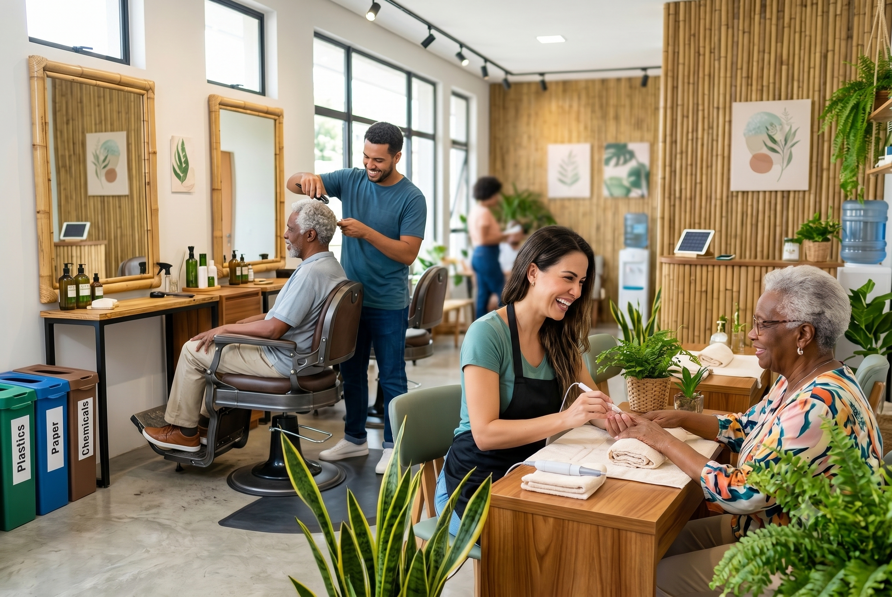
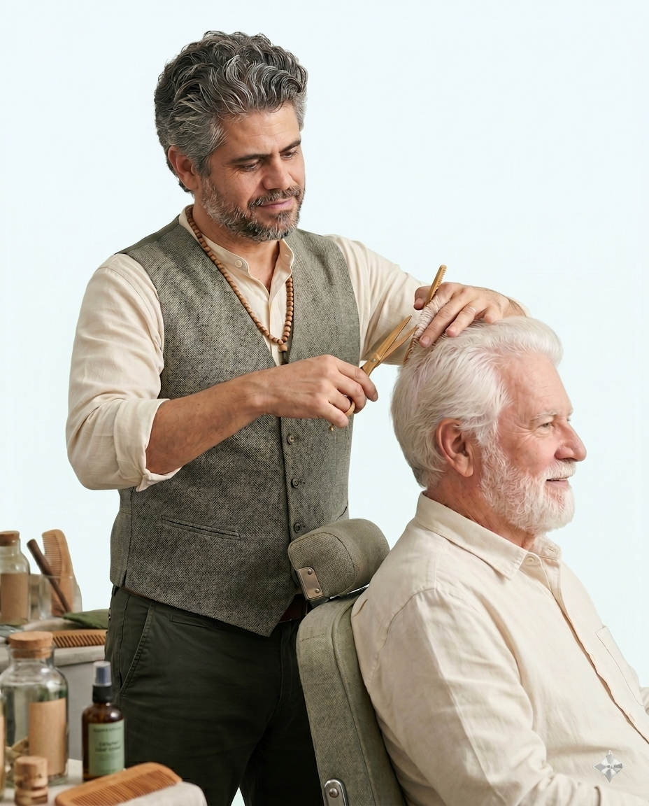
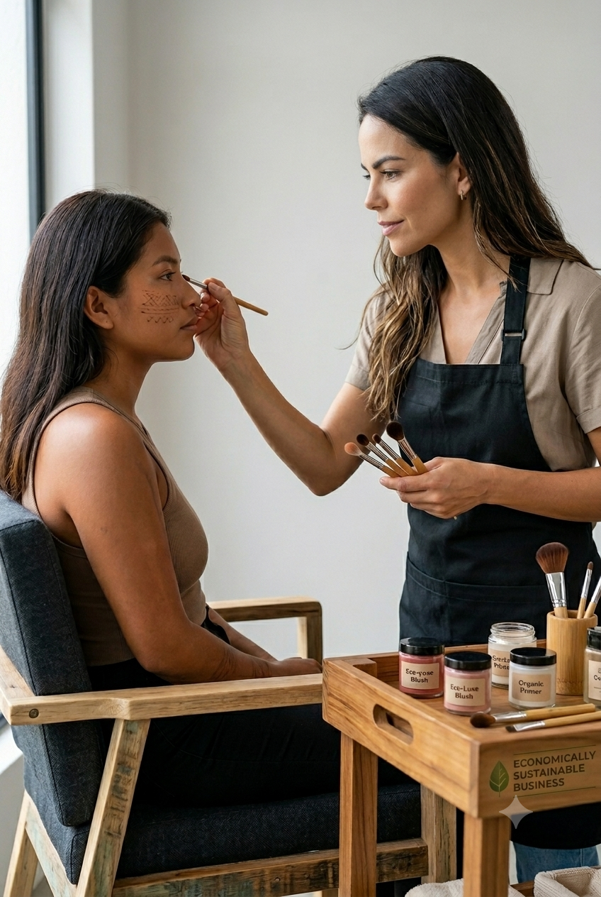

Transforme cada corte em respeito ao planeta: digitalize sua gestão, destine resíduos com inteligência e lidere a beleza do futuro.


Conquiste corações e mentes: valorize cada pessoa, acolha sua comunidade e dê asas à sustentabilidade social.
Estanque o desperdício invisível: adote a ecoeficiência e transforme a gestão sustentável em lucro real.
